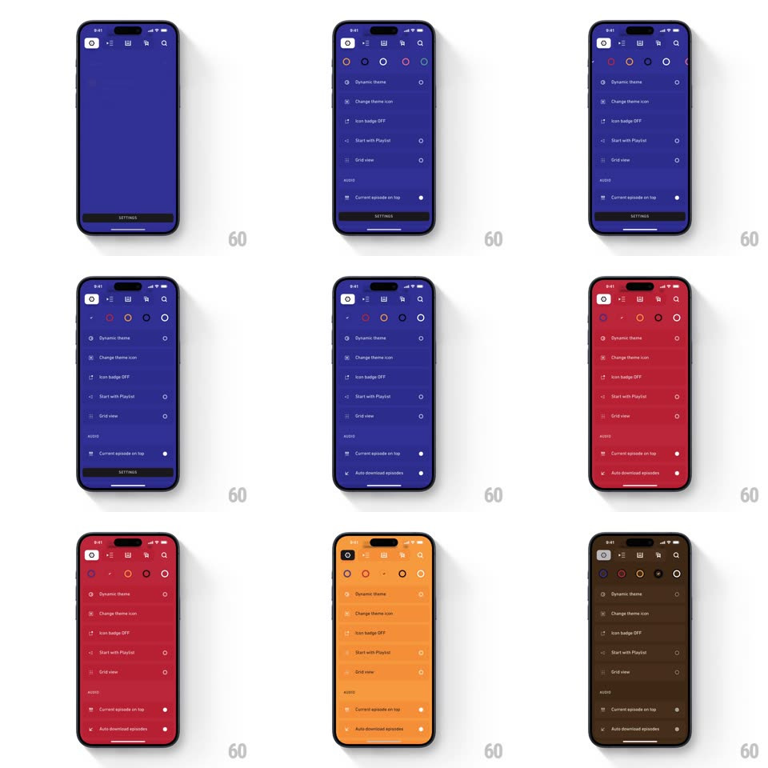

Media
Frame-by-frame

Rebuild this interaction 1:1: Agora's theme picker - the settings sheet shows a row of color dots, and tapping one re-colors the ENTIRE app instantly: background, list rows, icons, and chrome all shift to the new hue.

Rebuild this interaction 1:1: Agora's theme picker - the settings sheet shows a row of color dots, and tapping one re-colors the ENTIRE app instantly: background, list rows, icons, and chrome all shift to the new hue. ## Integration Integration: stack-agnostic spec - springs given as stiffness/damping, timed motions as duration + curve; map every value to your framework and animation library of choice. ## Scene Settings sheet over the podcast app: top row of theme dots (purple, blue, black, maroon, red, orange...), then rows (Dynamic theme, Change theme icon, Icon badge OFF, Start with Playlist, Grid view, Current episode on top). Background is fully theme-tinted. ## Motion spec Pattern: whole-app live theme swap. - Tap a dot: the selected dot gets a white ring (scale 1 -> 1.15 spring ~400/22, ~200ms). - The background color sweeps to the new hue from the tapped dot outward (radial wipe, ~300ms ease-out); every surface (list rows, header icons, toggle text) crossfades its tint in the same 300ms so nothing lags. - Text and icon colors re-compute per theme (white on dark hues) and crossfade with the background. - The sheet stays open - picking is a live preview, not a commit step. ## Calibration - One timing function across all surfaces; a staggered re-tint reads as a bug here. - Accent colors (badge red, toggles) stay constant across themes; only the base hue changes. ## Reduced motion Theme swaps with a flat crossfade, no radial wipe. ## Don't miss - The wipe originates from the tapped dot's position - the gesture causes the color. - The podcast feed behind the sheet is themed too - the change is app-wide, visible at the edges.